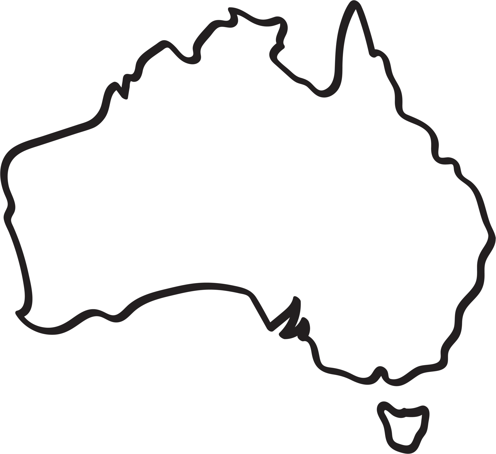

Austr
Discover forests
Australia’s forests offer stunning nature and unique wildlife. Visitors can enjoy scenic walking trails, waterfalls, and peaceful natural surroundings perfect for relaxation.
alia

Austr
Discover lakes
Australia’s lakes, from the pink waters of Lake Hillier to the vast salt flats of Lake Eyre, offer striking natural beauty and unique landscapes for travelers to explore.